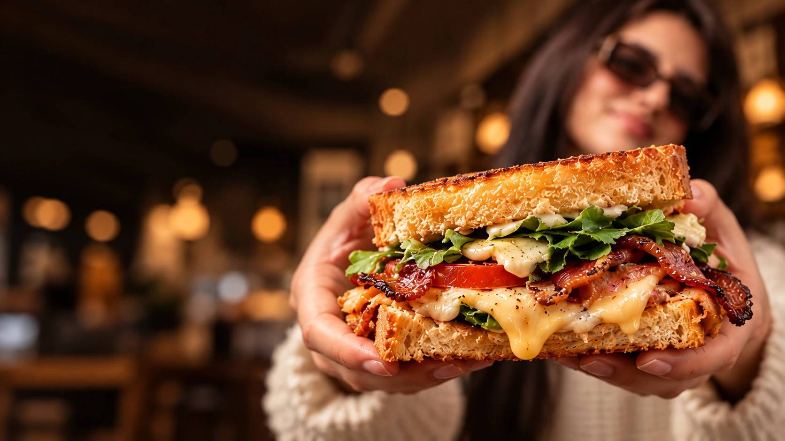
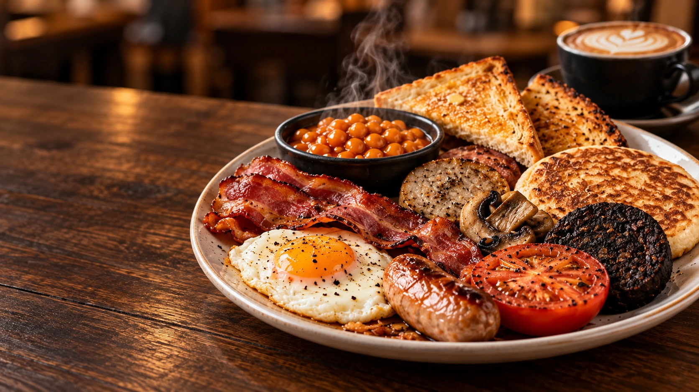
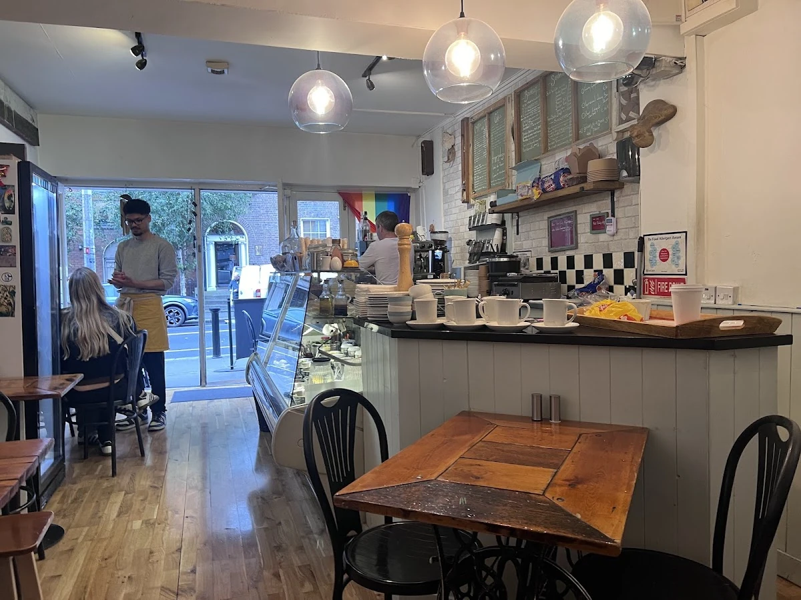
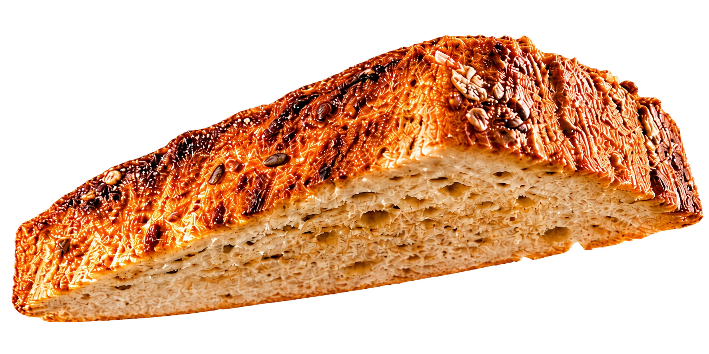
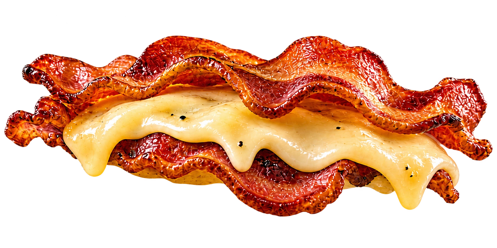
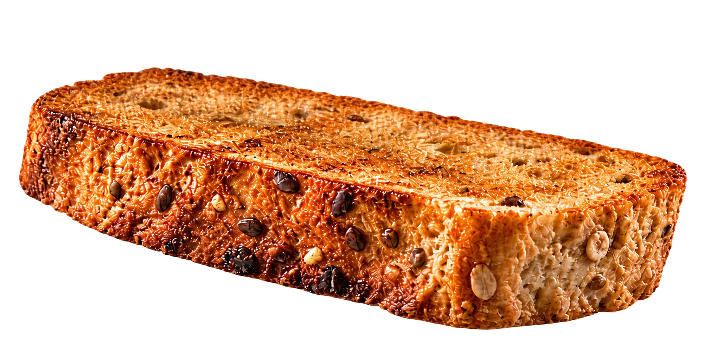

The Big
Bacon, egg, sausage, beans, toast, tomato, white and black pudding, mushrooms and pancake.

Frederick Street · Dublin 1
Breakfast, sandwiches and good coffee in Dublin.

A proper start.
Proper breakfasts, good coffee and a little lovin' to start your day.

Layer by layer.
Sandwiches, good company
and a little lovin'.



Reduced motion is enabled.